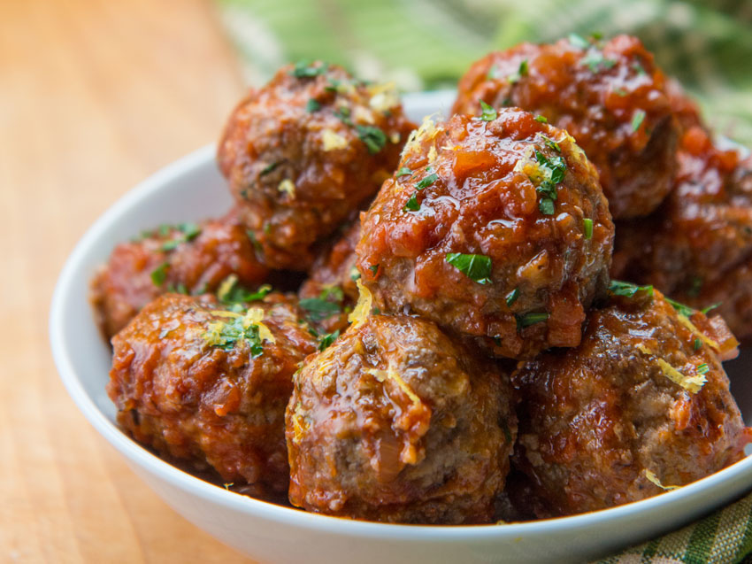

Meatballs

Get Swole with These Power-Packed Meatballs: Your Ultimate Muscle-Building Recipe!
Yo, what’s up, gym warriors and protein enthusiasts? If you’re looking to pump up those gains and fuel your workouts with some serious muscle-building grub, you’ve hit the jackpot. Today, I’m dropping a recipe that’s going to have your taste buds doing a victory dance while your muscles get the nutrients they need to grow. We’re talking about high-protein, nutrient-dense meatballs that’ll help you get swole and stay shredded. Let’s crush this recipe and turn those gains up to eleven!
Ingredients
- Ground Beef: 1 pound (Make sure it’s 90% lean or better. We’re all about that muscle and minimal fat!)
- >Ground Turkey: 1/2 pound (For that extra lean protein punch. You know we’re cutting out the fat but keeping the gains!)
- Egg: 1 large (A natural protein booster and binder—essential for those meatball muscles!)
- Oats: 1/2 cup (Swap out those bread crumbs for oats for extra fiber and slow-digesting carbs. We’re talking about sustained energy, bros!)
- Spinach: 1 cup, finely chopped (Greens are where it’s at. Packed with vitamins and minerals to keep those muscles fueled and functional!)
- Onion: 1 small, finely chopped (For flavor and a little bit of extra nutritional kick.)
- Garlic: 2 cloves, minced (Boosts metabolism and adds a killer taste. Perfect for a gym bro’s diet.)
- Parmesan Cheese: 1/4 cup, grated (Adds some flavor while giving you a little more protein. Yessir!)
- Italian Seasoning: 1 tablespoon (Herbs and spices for that pro-level taste.)
- Salt & Pepper: To taste (Keep it seasoned, keep it swole.)
- Olive Oil: 2 tablespoons (For cooking—gotta keep it heart-healthy and keep those meatballs from sticking.)
Steps
- Preheat the Oven: Crank it up to 375°F (190°C). We want that oven hot and ready to turn these meatballs into pure protein perfection.
- Mix It Up: In a large bowl, combine the ground beef and ground turkey. Add in the egg, oats, chopped spinach, onion, garlic, Parmesan cheese, Italian seasoning, salt, and pepper. Mix it all together until everything’s well combined, but don’t overdo it—just enough to get those ingredients working together.
- Form the Meatballs: Roll the mixture into 1.5-inch balls. This should make about 20 meatballs. The size is perfect for popping in your mouth after a workout or tossing in your meal prep.
- Cook the Meatballs: Heat the olive oil in a skillet over medium heat. Sear the meatballs for 3-4 minutes on each side, just until they get a nice brown crust. Then transfer them to a baking sheet and pop them in the preheated oven for 15-20 minutes, or until they’re cooked through and reach an internal temperature of 165°F (74°C).
- Serve Up: These bad boys are perfect on their own, but you can also toss them into your favorite marinara sauce for a classic twist. Serve with a side of steamed veggies or whole-grain pasta to keep those macros on point.
- Refuel and Flex: Enjoy these meatballs post-workout or as a high-protein meal anytime you need to fuel those muscle gains. And don’t forget to flex those biceps while you’re at it!.